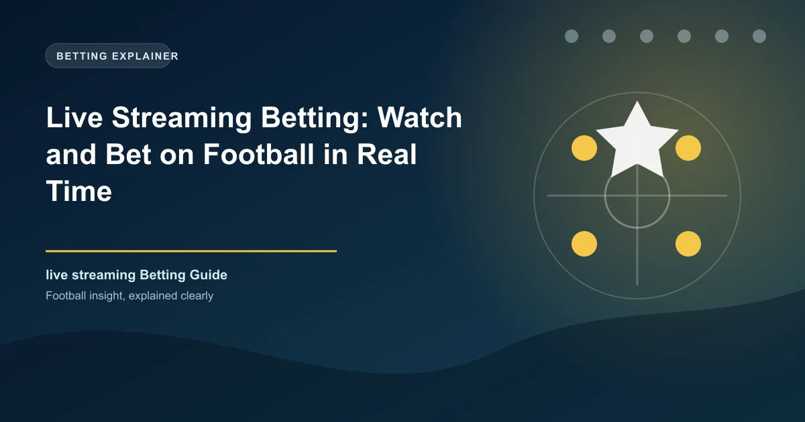

Live Streaming Betting: Watch and Bet on Football in Real Time

Live streaming betting — also called watch-and-bet — lets you stream a match directly through a bookmaker's platform and place in-play bets as the action unfolds. For bettors in Kenya and Nigeria, where mobile data costs have dropped significantly, this has become one of the fastest-growing betting formats. The ability to see the game gives you information that pre-match bettors don't have, which is exactly where the real value lies.
What Is Live Streaming Betting?
Live streaming betting is simply the practice of watching a match (usually via a bookmaker's built-in video feed) and placing bets during the game. The odds update every few seconds, reflecting the current scoreline, momentum, and time remaining. According to BettingExpert, in-play bets now account for over 50% of all football bets placed on major platforms.
Best Bookmakers with Live Streaming in Africa
| Bookmaker | Streaming Quality | African Coverage | Note |
|---|---|---|---|
| Betway Kenya | HD | Premier League, La Liga, Serie A | Popular in Kenya & Nigeria |
| Bet9ja | Standard | Nigerian leagues, EPL, UCL | #1 in Nigeria |
| 22Bet Nigeria | HD | Major European leagues | Wide coverage, M-Pesa support |
| Bet365 | Excellent HD | Best live coverage globally | Industry gold standard |
Live Streaming Betting Strategies
1. The Early Goal Fade
If a goal is scored in the first 15 minutes, the Over 2.5 price often drops sharply. If it was already in your pre-match acca, lay it (bet against it on an exchange like Betfair Exchange) to secure profit before the odds collapse. This is one of the most reliable live trading strategies.
2. Momentum Watching
You don't need a goal to see value in-play. Watch for teams dominating territory and shots on goal without scoring. After 20 minutes of sustained pressure, the Over 2.5 or the leading team's win odds become inflated if the score is still 0-0. This is where sharp in-play bettors strike.
3. The Halftime Value Trade
At half-time, the market pauses and recalibrates. If a team dominated the first half but is drawing 0-0, their second-half odds are often still underpriced. Back them for the second half — or bet the Over 1.5 2H market if you expect a floodgates opening.
When NOT to Bet In-Play
The most common mistake is betting from emotion — chasing a bad pre-match prediction with a panicked in-play bet. The second trap is overreacting to one event: a missed penalty doesn't mean the team will collapse. Wait for at least 5–10 minutes of the new pattern of play before acting.
Key In-Play Markets to Watch
- Next Goal: Predict which team scores next — one of the most traded in-play markets
- Over/Under 2.5 at kickoff: Often moves significantly in the first 10 minutes
- Exact Goal in 15-min intervals: E.g., Goal between 15:00–30:00
- Half with Most Goals: Back which half will be higher scoring
- Draw No Bet at half-time: In-play DNB if one team is clearly dominating
Pro Tip: Use the 5-Minute Rule
After any significant event (goal, red card, penalty), wait at least 5 minutes before placing an in-play bet. The market overreact first, then settles. Patience is the edge in live betting. Pinnacle's trading team confirms that the sharpest in-play odds moves come from professionals who trade on 5–10 minute delays, not instant reactions.
Mobile Streaming: Best Practice for African Bettors
Most African bettors watch on mobile. Here are practical tips:
- Use WiFi or 4G LTE for stable streaming — buffering costs you odds opportunities
- Close background apps to improve stream quality
- Bet365 and Betway have the most reliable mobile streams for African users
- Some matches only stream on desktop — check both if your stream doesn't load on mobile
Legal and Responsible Betting Notes
In Kenya, the Betting Control and Licensing Board regulates licensed operators. In Nigeria, the National Lottery Regulatory Commission oversees sports betting. Always use licensed bookmakers. If you feel your betting is getting out of control, contact GamCare or your local support organization.
Get In-Play Betting Insights
WinFulltime provides analysis on match momentum and form to complement your live betting decisions.
View Predictions →